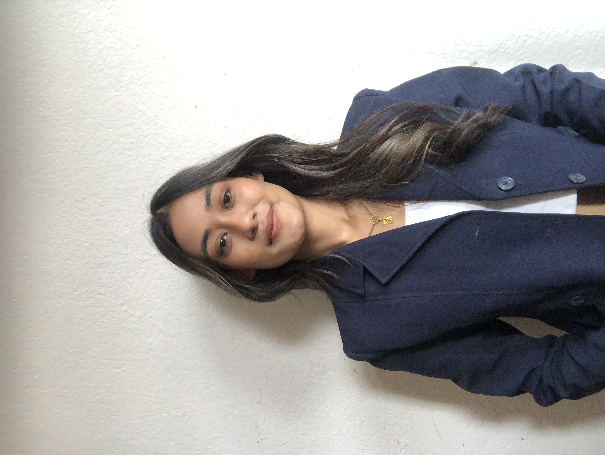

<!-- about section start -->
<link rel="stylesheet" href="style.css">
<section class="about" id="about">
    <div class="max-width">
        <h2 class="title">About me</h2>
        <div class="about-content">
            <div class="column left">
                
            </div>
            <div class="column right">
                <div class="text">I'm Riyana and I'm a <span class="typing-2"></span></div>
                <p>computer science student with a passion for front-end development. I am currently pursuing a BSc Hons degree in computer science, which has provided me with a solid foundation in programming and computer systems.dedicated student with a passion for continuous learning and improvement. I have always been driven to succeed and I am committed to putting in the effort to achieve my goals. With my strong work ethic and smart thinking skills, I am confident in my ability to perform well in any academic or professional setting. I am also known for my punctuality and reliability, and I always ensure that I meet deadlines and deliver high-quality work.I am eager to apply my skills and knowledge to make a positive impact in a professional setting. I believe that my hardworking and smart approach, combined with my punctuality and reliability, make me an ideal candidate for any opportunity.</p>
            </div>
        </div>
    </div>
</section>